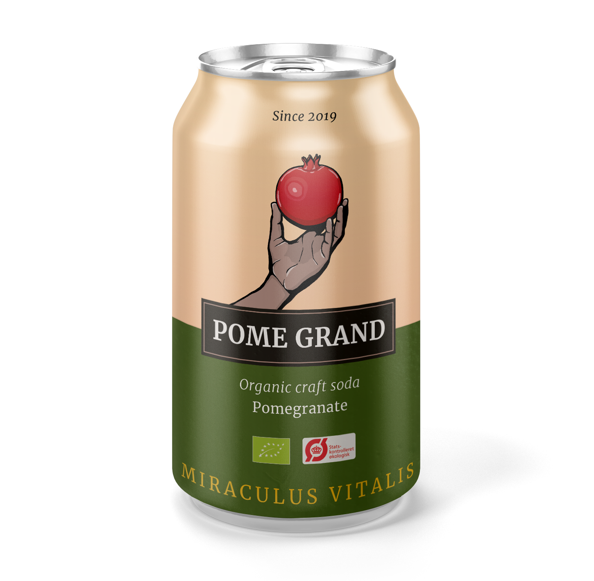

Friskmostet og klar
#pomegrand
#pomegrand
Da Vinci vidste det. Gourbet vidste det. Koden til et langt, sundt liv. Et glas rødvin dagligt og daglig motion i svømmebassinet. Og så masser af granatæble - i forskellige former. Som friskpresset juice eller som tyk puré. Han indtog det gennem hele sit voksenliv, og kaldte frugten for “la fonte della giovinezza”, “kilden til ungdom”. Senere i moderne tid har det vist sig, at frugten indeholder antioxidanten polyfenol, hvilket forebygger tegn på aldring.

Granatæblet har som symbol skiftet mening i tidens løb blandt religioner og kulturer siden menneskets oprindelse. Frugten har været vidt betegnet som et symbol for liv og fertilitet, og takket være dens sundhedsmæssige egenskaber, er frugten blevet associeret med evigt liv i både græsk og persisk mytologi. Ikke uden grund - for fugten er en af de kraftfuldeste og mest nærende på vores planet. Det er en sand mirakelfrugt, og derfor står den stadigvæk som et stærkt symbol for vitalitet og livskraft den dag i dag.

Vi har ved at undlade tilsætningsstoffer i denne ‘craft soda’, skabt et unikt produkt, kun bestående af friskmostet, koldpresset økologisk granatæble, kuldioxid og vand. Koldpresningen bevarer det naturlige indhold af vitaminer og antioxidanter i ‘Pome Grand’. Granatæblet udvindes ved en simpel mekanisk presning uden brug af organiske opløsningsmidler. Efter udvinding filtreres safterne for til sidst at blive tappet, frisk som mormors vilde bær fra kolonihaven. Et sundere alternativ til sukkerholdige sodavandsprodukter. Granatæblerne er nøje udvalgt fra lokale farmere fra den subtropiske by ‘Goychay’ i Aserbajsdjan, dyrket på økologisk og bæredygtig vis.

Kom forbi og tegn granatæbler i museets smukke omgivelser. Deltag i vores konkurrence om bedste portrættering af granatæblet og vind et gavekort til Tutein & Koch på 15.000 kr. samt et årskort til SMK. Der vil selvfølgelig også være rig mulighed for at smage vores sunde sodavand
Læs mere om eventet her: